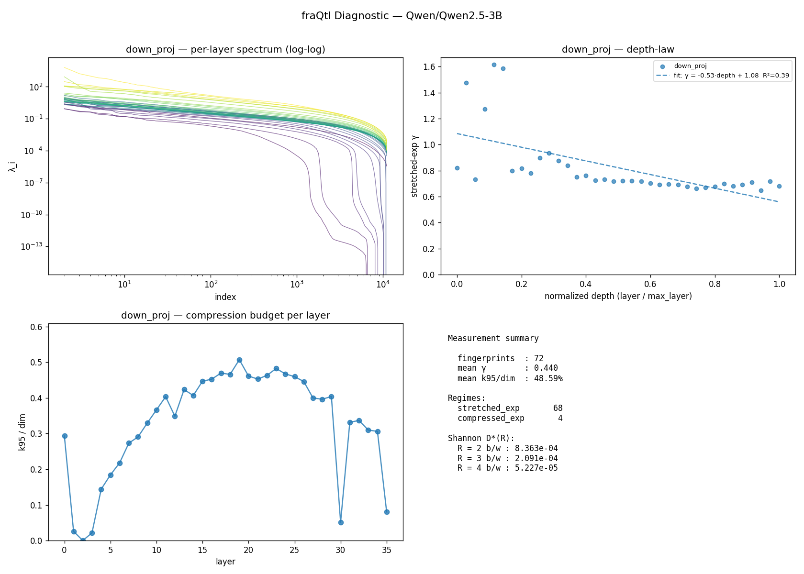

fraQtl Diagnostic — Qwen/Qwen2.5-3B
v0.1.1 ·
36 layers ·
projections: down_proj, o_proj ·
261.9s on cuda
TL;DR
Normal transformer, limited compression headroom.- 68/72 layers fall in the standard stretched-exponential class (KWW). 4 in other regimes, 0 unfit.
- Effective rank is 49% of dim — most eigendirections are active; rank-based compression is tight.
- Stretched-exp γ is 0.44 — steep decay, fast compression recovery.
This is a measurement tool. For actual compression outcomes, visit https://fraqtl.ai
Measurement summary
| Metric | Value |
|---|
| Fingerprints (layer × projection) | 72 |
| Mean γ (stretched_exp regime, non-poor fits only) | 0.440 |
| Mean k95 / dim | 48.59% |
| Regimes | 68 stretched_exp, 4 compressed_exp |
| Fit quality | 71 good · 1 moderate · 0 poor |
Shannon rate-distortion ceiling D*(R)
geometric mean over all layers at each bit budget R. Theoretical floor, not a prediction —
the actual PPL a real compressor achieves depends on the recipe (sign correction, rank protection, etc.).
| R (b/w) | D*(R) geomean |
|---|
| 2 | 8.363e-04 |
| 3 | 2.091e-04 |
| 4 | 5.227e-05 |
Depth-law fits
| Projection | Slope | Intercept | R² | γ p10/p50/p90 | n |
|---|
| down_proj | -0.525 | 1.085 | 0.393 | 0.678 / 0.722 / 1.103 | 36 |
| o_proj | +0.097 | 0.126 | 0.154 | 0.075 / 0.172 / 0.266 | 36 |
Per-layer fingerprint (first 40)
| Layer | Proj | dim | γ | regime | fit |
k95 | k99 | knee |
|---|
| 0 | down_proj | 11008 | 0.820 | stretched_exp | good | 3229 | 5587 | 6984 |
| 0 | o_proj | 128 | 0.060 | stretched_exp | good | 87 | 113 | — |
| 1 | down_proj | 11008 | 1.477 | compressed_exp | good | 283 | 508 | 782 |
| 1 | o_proj | 128 | 0.123 | stretched_exp | good | 49 | 91 | — |
| 2 | down_proj | 11008 | 0.731 | stretched_exp | good | 1 | 1 | 1421 |
| 2 | o_proj | 128 | 0.161 | stretched_exp | good | 71 | 105 | — |
| 3 | down_proj | 11008 | 1.272 | compressed_exp | good | 237 | 1387 | 3432 |
| 3 | o_proj | 128 | 0.190 | stretched_exp | good | 75 | 110 | — |
| 4 | down_proj | 11008 | 1.616 | compressed_exp | moderate | 1587 | 2924 | 3833 |
| 4 | o_proj | 128 | 0.255 | stretched_exp | good | 85 | 115 | — |
| 5 | down_proj | 11008 | 1.588 | compressed_exp | good | 2027 | 3622 | 5246 |
| 5 | o_proj | 128 | 0.160 | stretched_exp | good | 71 | 100 | — |
| 6 | down_proj | 11008 | 0.799 | stretched_exp | good | 2399 | 4260 | 6225 |
| 6 | o_proj | 128 | 0.202 | stretched_exp | good | 86 | 115 | — |
| 7 | down_proj | 11008 | 0.817 | stretched_exp | good | 3008 | 5148 | 6658 |
| 7 | o_proj | 128 | 0.227 | stretched_exp | good | 85 | 115 | — |
| 8 | down_proj | 11008 | 0.782 | stretched_exp | good | 3200 | 5469 | 7402 |
| 8 | o_proj | 128 | 0.205 | stretched_exp | good | 83 | 114 | — |
| 9 | down_proj | 11008 | 0.898 | stretched_exp | good | 3627 | 5873 | 7151 |
| 9 | o_proj | 128 | 0.154 | stretched_exp | good | 90 | 116 | — |
| 10 | down_proj | 11008 | 0.935 | stretched_exp | good | 4035 | 6368 | 7238 |
| 10 | o_proj | 128 | 0.106 | stretched_exp | good | 80 | 112 | — |
| 11 | down_proj | 11008 | 0.875 | stretched_exp | good | 4442 | 6926 | 7588 |
| 11 | o_proj | 128 | 0.160 | stretched_exp | good | 80 | 112 | — |
| 12 | down_proj | 11008 | 0.840 | stretched_exp | good | 3839 | 6352 | 7467 |
| 12 | o_proj | 128 | 0.166 | stretched_exp | good | 74 | 110 | — |
| 13 | down_proj | 11008 | 0.749 | stretched_exp | good | 4661 | 7366 | 8227 |
| 13 | o_proj | 128 | 0.063 | stretched_exp | good | 78 | 111 | — |
| 14 | down_proj | 11008 | 0.763 | stretched_exp | good | 4479 | 7146 | 8075 |
| 14 | o_proj | 128 | 0.133 | stretched_exp | good | 83 | 113 | — |
| 15 | down_proj | 11008 | 0.727 | stretched_exp | good | 4920 | 7636 | 8423 |
| 15 | o_proj | 128 | 0.059 | stretched_exp | good | 84 | 114 | — |
| 16 | down_proj | 11008 | 0.734 | stretched_exp | good | 4982 | 7668 | 8365 |
| 16 | o_proj | 128 | 0.167 | stretched_exp | good | 100 | 121 | — |
| 17 | down_proj | 11008 | 0.717 | stretched_exp | good | 5170 | 7872 | 8506 |
| 17 | o_proj | 128 | 0.097 | stretched_exp | good | 67 | 104 | — |
| 18 | down_proj | 11008 | 0.723 | stretched_exp | good | 5132 | 7811 | 8414 |
| 18 | o_proj | 128 | 0.088 | stretched_exp | good | 82 | 112 | — |
| 19 | down_proj | 11008 | 0.722 | stretched_exp | good | 5584 | 8209 | 8639 |
| 19 | o_proj | 128 | 0.118 | stretched_exp | good | 79 | 113 | — |
Figures
(generate the PNG with report.to_png(path) — shown here if embedded)

About
This diagnostic measures information-theoretic compressibility from the input covariance
spectrum of each layer. It does not perform compression — it reports the ceiling and
shape. The fraQtl compression engine uses this fingerprint
plus additional engineering (sign correction, per-model calibration) to get closer to the
ceiling in practice.